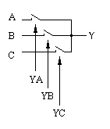
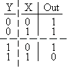
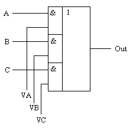
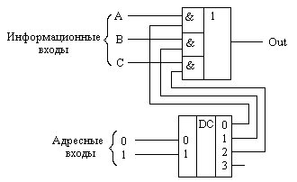
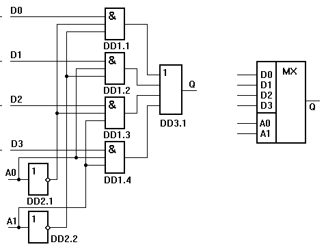

Мультиплексоры
Мультиплексорами называются устройства, которые позволяют подключать несколько входов к одному выходу. Номер информационного входа, который соединяется с выходом, задается в двоичном коде на адресных входах. Если мультиплексор имеет n адресных входов, то в нем может быть 2n информационных входов.
В простейшем случае такую коммутацию можно осуществить при помощи ключей:

Рис. 1 - Коммутатор (мультиплексор), собранный на ключах.
В цифровых схемах требуется управлять ключами при помощи логических уровней. То есть нужно подобрать устройство, которое могло бы выполнять функции электронного ключа с электронным управлением цифровым сигналом.
Рассмотрим таблицу истинности логического элемента "И". При этом один из входов логического элемента "И" будем рассматривать как информационный вход электронного ключа, а другой вход – как управляющий. Так как оба входа логического элемента "И" эквивалентны, то не важно какой из них будет управляющим входом. Пусть вход X будет управляющим, а Y– информационным. Для простоты рассуждений, разделим таблицу истинности на две части в зависимости от уровня логического сигнала на управляющем входе X.

По таблице истинности отчетливо видно, что пока на управляющий вход X подан нулевой логический уровень, сигнал, поданный на вход Y, на выход Out не проходит. При подаче на управляющий вход X логической единицы, сигнал, поступающий на вход Y, появляется на выходе Out. То есть логический элемент "И" можно использовать в качестве электронного ключа. При этом не важно какой из входов элемента "И" будет использоваться в качестве управляющего входа, а какой - в качестве информационного. Остается только объединить выходы элементов "И" в один выход. Это делается при помощи элемента "ИЛИ" точно так же как и при построении схемы по произвольной таблице истинности. Такой вариант схемы коммутатора приведен на рисунке 2.

Рис. 2 - Принципиальная схема мультиплексора, выполненая на логических элементах.
В схемах, приведенных на рисунках 1 и 2, можно одновременно включать несколько входов на один выход. Однако обычно это приводит к непредсказуемым последствиям. Кроме того, для управления таким коммутатором требуется много входов, поэтому в состав мультиплексора обычно включают двоичный дешифратор, как показано на рисунке 3. Это позволяет управлять переключением информационных входов при помощи двоичных кодов, подаваемых на управляющие входы. Количество информационных входов в таких схемах выбирают кратным степени числа два.

Рис. 3 - Принципиальная схема мультиплексора, управляемого двоичным кодом.
Мультиплексор с двоичным управлением изображается на принципиальных схемах как показано на рисунке 4.

Рис. 4 - Функциональная схема мультиплексора, имеющего четыре входа и его условное графическое обозначение
Мультиплексоры могут снабжаться дополнительным входом – входом разрешения передачи информации с входов на выход.
Применение мультиплексора:
- мультиплексирование многоразрядного адреса микросхем памяти;
- мультиплексное управление многоразрядными многоэлементными индикаторами;
- последовательный опрос многих переменных, датчиков и других однобитовых источников информации;
- временное уплотнение аналоговых сигналов в телефонии;
- мультиплексирование выходных данных тестопригодных БИС;
- построение многоканальных коммутаторов, осциллографов.